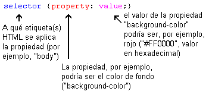
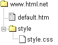
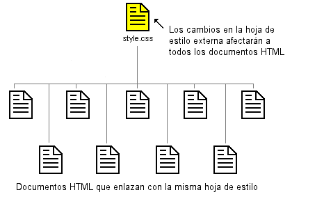

Lección 2: ¿Cómo funciona CSS?
En esta lección aprenderás a crear tu primera hoja de estilo; conocerás el modelo básico de CSS y qué código es necesario para usar CSS en un documento HTML.
Muchas de las propiedades que se usan en las hojas de estilo en cascada (CSS) son parecidas a las de HTML. Así pues, si estás acostumbrado a usar HTML para cuestiones de presentación,
lo más probable es que reconozcas gran parte del código usado. Examinemos un ejemplo concreto.
La sintaxis básica de CSS
Digamos que queremos un bonito color rojo como fondo de nuestra página web:
Usando HTML podríamos haberlo conseguido así:
<body bgcolor="#ff0000">
Con CSS el mismo resultado puede lograrse así:
body {background-color: #FF0000;}
Como verás, el código usado es más o menos idéntico para HTML y CSS. El ejemplo anterior te muestra además el modelo CSS fundamental:

Pero ¿dónde se sitúa el código CSS? Eso, precisamente, es lo que vamos a estudiar ahora mismo.
Aplicando CSS a un documento HTML
Podemos aplicar CSS a un documento HTML de tres maneras diferentes. Todos estos métodos se explican a continuación. Te recomendamos que te centres en el tercero, es decir, el externo.
Método 1: En línea (el atributo style)
Un modo de aplicar CSS a HTML es usando el atributo de HTML style. Si ampliamos el ejemplo anterior sobre el color de fondo rojo, CSS se puede aplicar así:
<html>
<head>
<title>Ejemplo</title>
</head>
<body style="background-color: #FF0000;">
<p>Esta es una página con fondo rojo</p>
</body>
</html>
Método 2: Interno (la etiqueta style)
Otra forma es incluir el código CSS usando la etiqueta HTML <style>. Por ejemplo, así:
<html>
<head>
<title>Ejemplo</title>
<style type="text/css">
body {background-color: #FF0000;}
</style>
</head>
<body>
<p>Esta es una página con fondo rojo</p>
</body>
</html>
Método 3: Externo (enlace a una hoja de estilo)
El método recomendado es enlazar con lo que se denomina hoja de estilo externa. A lo largo de este tutorial usaremos este método en todos nuestros ejemplos.
Una hoja de estilo externa es sencillamente un fichero de texto con la extensión .css. Como cualquier otro fichero, puedes colocar la hoja de estilo en el servidor web o en el disco duro.
Por ejemplo, digamos que tu hoja de estilo se llama style.css y está localizada en una carpeta que se llama style. Esta situación se puede ilustrar de la siguiente manera:

El truco consiste en crear un vínculo desde el documento HTML (por ejemplo, default.htm) con la hoja de estilo (style.css). Dicho vínculo se puede crear con una sencilla línea de código HTML:
<link rel="stylesheet" type="text/css" href="style/style.css" />
Fíjate cómo la ruta a nuestra hoja de estilo aparece indicada por medio del atributo href.
La línea de código debe insertarse en la sección de encabezado del código HTML, es decir, entre la etiqueta <head> y </head>. De esta manera:
<html>
<head>
<title>Mi documento</title>
<link rel="stylesheet" type="text/css" href="style/style.css" />
</head>
<body>
...
Este vínculo indica al navegador que debería usar la presentación del fichero CSS al mostrar el fichero HTML. Lo realmente bueno de este método es que se pueden vincular
varios documentos HTML con la misma hoja de estilo. En otras palabras, se puede usar un único fichero CSS para controlar la presentación del muchos documentos HTML.

Esta técnica puede ahorrarte mucho trabajo. Si quisieras cambiar, por ejemplo, el color de fondo de un sitio web compuesto por 100 páginas, un hoja de estilo puede ahorrarte el
tener que cambiar de forma manual los 100 documentos HTML. Con CSS, el cambio se puede llevar a cabo en unos segundos modificando parte del código de la hoja de estilo principal.
Vamos a llevar a la práctica lo que acabamos de aprender.
Pruébalo tú mismo
Abre el Bloc de notas (o el editor de texto que utilices) y crea dos ficheros - un fichero HTML y un fichero CSS - con el siguiente contenido:
Fichero default.htm
<html>
<head>
<title>Mi documento</title>
<link rel="stylesheet" type="text/css" href="style.css" />
</head>
<body>
<h1>Mi primera hoja de estilo</h1>
</body>
Fichero style.css
body {
background-color: #FF0000;
}
</html>
Ahora coloca los dos ficheros en la misma carpeta. Recuerda grabar los ficheros con las extensiones correctas (".htm" y ".css", respectivamente).
Abre el fichero default.htm con el navegador y observa que la página tiene un color de fondo rojo. ¡Enhorabuena! ¡Acabas de crear tu primera hoja de estilo!
Y ahora sin parar pasa a la lección siguiente en la que examinaremos algunas de la propiedades de CSS.
Leccion Anterior